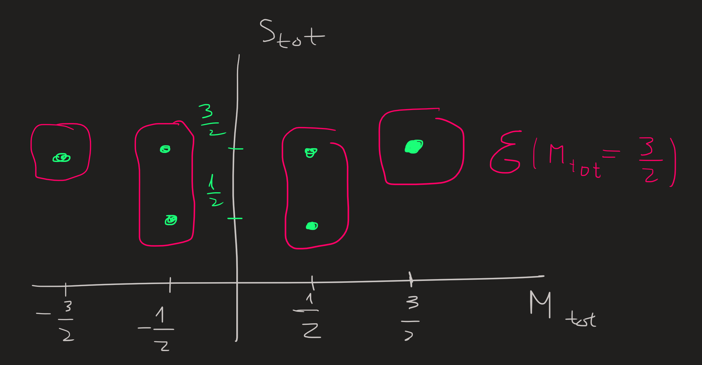

Ideas to get started with Angular Momentum in Quantum Mechanics
1) Commutation Relations are fundamental
In QM there are essentially two types of angular momentum: Orbital Angular Momentum and Spin Angular momentum.
Orbital angular momentum is defined as an analog of the classical one, as
\[ \mathbf{L}=\mathbf{R}\times \mathbf{P} \tag{1}\] \(\mathbf{R}=(X,Y,Z)\) and \(\mathbf{P}=(P_x,P_y,P_z)\) are vectors whose entries are operators.
This formula is a compact way of writing:
\[ \begin{cases} L_x = YP_z-ZP_y\\ L_y = Z P_x -XP_z\\ L_z = XP_y-YP_x \end{cases} \tag{2}\]
From the three components of \(\mathbf{L}\) and the canonical commutation relations:
\[ [X,P_x]=i\hbar \qquad [Y,P_y]=i\hbar \qquad [Z,P_z]=i\hbar \]
we can derive the following ones:
\[ [L_x,L_y]=i\hbar L_z\qquad [L_y,L_z]=i\hbar L_x\qquad [L_z,L_x]=i\hbar L_y\qquad [L_i,L_j]=0\quad \text{for}\ i\not= j \tag{3}\]
From one perspective, these are the commutation relations for the components of the quantum angular momentum that stem from Equation 1 and Equation 3. From a different perspective we can say that the angular momentum Equation 1 is a particular example of \(\mathbf{L}\) that satisfy these three commutation “equations” in Equation 3. In other words, \(\mathbf{R}\times \mathbf{P}\) is a solution of Equation 3.
In QM one wants to talk about more general angular momentum, for example spin angular momentum, it has no classical analog and hence is not defined explicitly as \(\mathbf{R}\times \mathbf{P}\). However one can still define it implicitly, by saying that whatever spin angular momentum operator is, it must satisfy the previous commutations relation.
These two observations motivates us to introduce a generic angular momentum, with letter \(\mathbf{J}\), for which the only thing we know is that it obeys the rules:
\[ [J_x,J_y]=i\hbar J_z\qquad [J_y,J_z]=i\hbar J_x\qquad [J_z,J_x]=i\hbar J_y\qquad [J_i,J_j]=0\quad \text{for}\ i\not= j \tag{4}\]
\(\mathbf{J}\) can be either the orbital angular momentum of a particle or the spin angular momentum or a combination of these, since all quantum angular momenta has commutation relations of form Equation 4 .
2) The norm-squared commutes with everyone - What are the consequences?
Given \(\mathbf{J}\) we can introduce now its norm squared \(J^2\), defined as:
\[ J^2=J_x^2+J_y^2+J_z^2 \tag{5}\]
We can easily show (we’ll skip the boring details) from Equation 4 that Equation 5 commutes with the three components of \(\mathbf{J}\), that is:
\[ [J^2,J_x]=0\qquad[J^2,J_y]=0\qquad[J^2,J_z]=0 \tag{6}\]
For example, using Equation 4 we find:
\[ \begin{align} [J^2,J_z]&=[J_x^2+J_y^2+J_z^2,J_z]\\ &=[J_x^2,J_z]+[J_y^2,J_z]+[J_z^2,J_z]\\ &=0+0+0\\ &=0 \end{align} \]
That fact that \(J^2\) commutes with \(J_z\) will be of great importance, because it guarantees one can find (and thus define) a set of basis kets in the Hilbert space that are simultaneously eigenstates of both, \(J^2\) and \(J_z\). Moreover, since the commuting operators are hermitian (we say in QM they are observables) the eigenstates of the operators can be made orthogonal and the eigenvalues are real.
3) The idea
Our goal is to define (to be mare specific, to define is to give meaningful names to something) a basis of eigenstates common to \(J^2\) and \(J_z\) for our Hilbert Space. Why? One of the most important goals in QM is to find the eigenstates of the Hamiltonian of the system, paraphrased differently, we say, we want to find the basis of eigenstates of \(H\). Imagine we have an Hamiltonian which commutes with \(J^2\) and \(J_z\), then we know we can find a basis of eigenstates common to the three operators. Knowing already what is the eigenbasis common to \(\{J^2,J_z\}\) greatly facilitates finding the eigenstates of \(H\). The three operators (observables) constitute a complete set of commuting observables (CSCO) \[ \{H,J^2,J_z\} \] and we want to define its eigenbasis.
4) Eigenvalues and eigenvectors of Angular Momentum operators
In summary, skipping the proofs, what the commutation relations introduced in Equation 4 allow us to conclude is:
- The eigenvalues of \(J^2\) are of the form \(j(j+1)\hbar^2\) and those of \(J_z\) are \(m\hbar\) where \(j\) is a positive integer or semi-integer and \(-j\leq m\leq j\) in steps of \(1\).
- The corresponding eigenvectors can be labelled by the numbers \(j\) and \(m\).
In other words:
\[ \begin{align}&J^2\ket{j,m}=j(j+1)\hbar^2\ket{j,m},\\&J_z\ket{j,m}=m\hbar\ket{j,m}.\end{align} \tag{7}\]
The only values that \(j\) can take are \(0\), \(1/2\), \(3/2\), \(2\), etc. For example, if \(j=3/2\) then \(m=-3/2,-1/2,1/2,3/2\).
5) Raising and lowering operators
By definition we have: \[ J_+=J_x+iJ_y\qquad J_-=J_x-iJ_y\qquad. \tag{8}\] There are now plenty commutations relations we can derive that relate these two operators and either \(J^2\) or \(J\), but the ultimate consequence of these relations is that they tell us how to organize the eigenbasis of \(\{J^2,J_z\}\), we’ll see that in 6).
Additionally, these definitions allow us to write:
\[ J_x = \frac{1}{2}(J_++J_-) \qquad J_y = \frac{1}{2i}(J_+-J_-), \]
which will be useful later.
How do Equation 8 operators act on the eigenstates of \(\{J^2,J_z\}\)?
Answer:
\[ J_\pm \ket{n,j,m}=\hbar \sqrt{j(j+1)-m(m\pm 1)}\ket{n,j,m\pm 1}, \tag{9}\]
A formula which is, no surprise, derived from Equation 4 (through a rather complicated path). The names raising and lowering comes form the fact that \(m\) is either raised by \(+1\) or lowered by \(-1\) each time \(J_\pm\) acts.
6) The structure of the Eigenbasis
From Equation 7 and Equation 9 emerges the following picture

which organizes the eigenstates for values of \(j\) from \(0\) up to \(2\), each blue dot in the picture corresponds to basis vector \(\ket{j,m}\). These kets constitute an orthonormal basis for the Hilbert space, and in the picture we also see as horizontal boxes the subspaces \(\mathcal{E}(j=1/2)\) up to \(\mathcal{E}(j=2)\) spanned by the basis kets (blue dots).
From the first equation in Equation 7 we notice that for a given value of \(j\), for example \(j=1\), then \(\{|1,1\rangle,|1,0\rangle,|1,-1\rangle\}\) are eigenvectors of \(J^2\) with the same eigenvalue \(1(1+1)\hbar^2\) , we therefore say the eigenvalue is 3-degenerate, or that the space \(\mathcal{E}(j=1)\) spanned by this basis is 3-degenerate. We distinguish the 3 eigenvectors by the \(J_z\) eigenvalue \(m\hbar\), or more simply by just the integer \(m\).
Subspaces of the Hilbert space can now be specified by fixing \(j\) for example, or by fixing \(m\) for various values. The eigenbasis within each \(\mathcal{E}(j)\) is connected by the raising and lowering operators as we see by the red and green arrows in the figure above.
7) Matrix representation of \(J^2\), \(J_x\), \(J_y\) and \(J_z\) in \(\mathcal{E}(j=1)\)
To obtain the matrix representation of an operator on a given vector space we need to know how this operator acts on that space; we know how it acts on a given vector space by knowing how it acts on the chosen basis. Note: The matrix representation of the operator is then specific for the basis.
For example, let us choose the space \(\mathcal{E}(j=1)\) of eigenvectors of \(\{J^2,J_z\}\), the basis is:
\[ \mathcal{B}=\{|1,1\rangle,|1,0\rangle,|1,-1\rangle\} \tag{10}\]
see Figure 1 .
To know how \(J_x\) acts in \(\mathcal{E}(j=1)\) we compute how it acts on the basis Equation 10:
\[ \begin{align} J_x|1,1\rangle &= \frac{1}{2}(J_+ +J_-)|1,1\rangle\\ &=\frac{1}{2}J_+|1,1\rangle+\frac{1}{2}J_-|1,1\rangle\\ &=\frac{\hbar}{2}\sqrt{1(1+1)-1(1+1)}|1,2\rangle+\frac{\hbar}{2}\sqrt{1(1+1)-1(1-1)}|1,0\rangle\\ &=\frac{\hbar}{\sqrt{2}}|1,0\rangle \end{align} \tag{11}\]
We conclude that when \(J_x\) acts on the basis element \(|1,1\rangle\) it outputs \(|1,0\rangle\) times a constant, notice the input and output both live in \(\mathcal{E}(j=1)\).
Let us see now what happens when \(J_x\) acts on the second basis ket \(|1,0\rangle\):
\[ \begin{align} J_x|1,0\rangle &= \frac{1}{2}(J_++J_-)|1,0\rangle\\ &=\frac{\hbar}{2}\sqrt{1(1+1)-0(0+1)}|1,1\rangle+\frac{\hbar}{2}\sqrt{1(1+1)-0(0-1)}|1,1\rangle|1,-1\rangle\\ &=\frac{\hbar}{\sqrt{2}}(|1,1\rangle+|1,-1\rangle) \end{align} \tag{12}\]
As \(J_x\) acts on \(|1,0\rangle\) it gives a linear combination \(|1,1\rangle+|1,-1\rangle\) of basis vectors, which in turn also lives in \(\mathcal{E}(j=1)\).
And finally, a similar calculation would shows the action on the third ket is:
\[ J_x|1,-1\rangle =\frac{\hbar}{\sqrt{2}}|1,0\rangle \tag{13}\]
Again, the input \(|1,-1\rangle\) is in \(\mathcal {E}(j=1)\) and so is the output \(|1,0\rangle\).
The calculation above shows clearly that the the operator \(J_x\) maps the basis of \(\mathcal{E}(j=1)\) into vectors in \(\mathcal{E}(j=1)\). Therefore, in general it will map any ket of \(\mathcal{E}(j=1)\) into another in \(\mathcal{E}(j=1)\); the jargon for this observation is to say that “\(\mathcal{E}(j=1)\) is globally invariant under the action of \(J_x\)”; more colloquially we just say “the action of \(J_x\) is stuck in the subspace”. This observation is a consequence of the fact that the operator in question \(J_x\) commutes with the operator \(J^2\) that characterizes the subspace
\[ [J^2,J_x]=0 \implies [\text{the action of $J_x$ is stuck in the subspaces of $J^2$}] \]
Now lets get the matrix representation of \(J_x\) in \(\mathcal{E}(j=1)\). The results in Equation 11, Equation 12 and Equation 13 are summarizes in step 0:
Step zero:
\[ \begin{cases} J_x|1,1\rangle=\frac{\hbar}{\sqrt{2}}|1,0\rangle\\ J_x|1,0\rangle =\frac{\hbar}{\sqrt{2}}(|1,1\rangle+|1,-1\rangle)\\ J_x|1,-1\rangle =\frac{\hbar}{\sqrt{2}}|1,0\rangle \end{cases} \tag{14}\] note, these formulas are important: they tell us how \(J_x\) acts on the chosen basis of chosen subspace \(\mathcal{E}(j=1)\). From then we can now write the corresponding matrix representation, but:
First step: write the identity of \(\mathcal{E}(j=1)\):
\[ 1 = \sum_{m=-1,0,1} |1,m\rangle\langle1,m| \]
Second step: write \(J_x\) between the identities:
\[ J_x = \sum_{m,m'=1,0,-1}|1,m\rangle\langle1,m|J_x|1,m'\rangle\langle1,m'| \tag{15}\]
Third step: substitute Equation 14 in Equation 15:
\[ \begin{align} J_x &= \frac{\hbar}{\sqrt{2}}\left(|1,0\rangle\langle 1,1|+|1,1\rangle\langle 1,0|+|1,-1\rangle\langle 1,0|+|1,0\rangle\langle 1,-1|\right) \end{align} \tag{16}\]Fourth, write Equation 16 using using matrix notation. If we agree to order the basis as \(\{|1,1\rangle, |1,0\rangle,|1,-1\rangle\}\) we find:

We can name this matrix as \([J_x]_\mathcal{B}\), thenotation remind us: this is a matrix representing the action of \(J_x\) in the \(\mathcal{B}\)! The squiggly arrow just mean: “it is represented by”.
Repeating these steps for \(J_y\) and \(J_z\) yields the results:

The matrix \([J_z]_\mathcal{B}\) is diagonal since the basis elements we choose for \(\mathcal{E}(j=1)\) are its eigenvectors, the diagonal elements are the the three \(m\hbar\) eigenvalues \(m=1,0,-1\). Since they are also eigenvectors of \(J^2\) we find a diagonal with the \(1(1+1)\hbar^2=2\hbar^2\) eigenvalues repeated three times:

The equal sign in Equation 15 and Equation 16 is not accurate, because the right hand side is the representation only on the subspace \(\mathcal{E}(l=1)\), while the left hand side is the “whole operator”. What would be accurate is to use the entire basis and write:
\[ J_x =\sum_{l=0}^\infty\sum_{-l\leq m,m'\leq l}|l,m\rangle\langle l,m|J_x|l,m'\rangle\langle l,m'| \]
rather than Equation 15.
We could emphasize the distinction by defining a new operator \(J'_x\) which is restricted to act only in this subspace:
\[ J'_x = \frac{\hbar}{\sqrt{2}}\left(|1,0\rangle\langle 1,1|+|1,1\rangle\langle 1,0|+|1,-1\rangle\langle 1,0|+|1,0\rangle\langle 1,-1|\right) \tag{17}\]
8) The matrix representation of \(J^2\), \(J_x\), \(J_y\) and \(J_z\) in \(\mathcal{E}(j=1/2)\) (Spin angular momentum)
The intrinsic spin angular momentum of an electron is described by states living in the \(\mathcal{E}(j=1/2)\) subspace (see Figure 1), the basis for this subspace is (as usual) furnished by the simultaneous eigenvectors of the \(J^2\) and \(J_z\):
\[ \begin{align}&J^2\ket{1/2,m}=\frac{3}{4}\hbar^2\ket{1/2,m}\\&J_z\ket{1/2,m}=m\hbar\ket{1/2,m}\end{align} \tag{18}\]
where \(m=\pm 1/2\). Therefore we say
\[ \mathcal{E}(j=1/2)=\text{span} \{|1/2,1/2\rangle,|1/2,-1/2\rangle\} \]
given \(j=1/2\) is fixed, it is usual to drop it from the ket notation and simply write \(|m\rangle\) where \(m=\pm1/2\).
we can rename \(m\) as \(m_s\) and then reexpress it as \(m_s=\sigma/2\) with \(\sigma =\pm\) or \(\sigma=\uparrow,\downarrow\), but for the present notes we’ll keep the \(m_s\) notation.
The \(j=1/2\) states are very important (they are the states that describe electrons spins for example), so much that we rename the operators \(\{J^2,J_z\}\) into \(\{S^2,S_z\}\) . Instead of Equation 18 we should write:
\[ \begin{align}&S^2\ket{m_s}=\frac{3}{4}\hbar^2\ket{m_s}\\&S_z\ket{m_s}=m_s\hbar\ket{m_s}\end{align} \]
to emphasize the act, these operators only act on \(\mathcal{E}(j=1/2)\). Recall we already did something similar when we defined \(J'_x\) in Equation 17.
The basis states \(\{|1/2\rangle,|-1/2\rangle\}\) that span the subspace \(\mathcal{E}(1/2)\) are connect by the raising \(S_+\) and lowering operator \(S_-\) introduced in Equation 9:
\[ S_+\ket{-1/2}=\hbar\sqrt{1/2(1/2+1)-1/2(1/2+1)}\ket{1/2}=\hbar\sqrt{2}/2\ket{1/2} \tag{19}\]
The raising and lowering operators are important for another reason, they tell us how \(S_x\) and \(S_y\) act on the eigenbasis of \(\{S^2,S_z\}\), from their definition we have:
\[ S_x=\frac{1}{2}(J_++J_-) \qquad S_y=\frac{1}{2i}(J_+-J_-) \tag{20}\]
In order to know how \(S_x\) and \(S_y\) act on this basis requires first to reexpress these operators in terms of operator we know how they act in this basis, the formulas Equation 20 together with Equation 19 do precisely that.
By knowing how an operator acts on a basis we know how obtain its matrix representation, for example, let us take a look at \(S_z\) and then \(S_x\) and \(S_y\). We can write the action of \(S_z\) on the basis \(\{\ket{1/2},\ket{-1/2}\}\) as:
\[ \begin{align}&S_z\ket{1/2}=\frac{\hbar}{2}\ket{1/2}+0\ket{-1/2}\\&S_z\ket{-1/2}=0\ket{1/2}+\frac{\hbar}{2}\ket{-1/2}\end{align} \]
this is step zero of the steps found in 7). Following them again, we compute the numbers \(\braket{m|S_z|m'}\), which we organize into the matrix:
\[ [S_z]_{\mathcal{E}(j=1/2)}=\frac{\hbar}{2}\begin{pmatrix}1 & 0\\0 & -1\end{pmatrix} \]
To get the matrices for \(S_x\) and \(S_y\) in the basis \(\{\ket{-1/2},\ket{1/2}\}\), act with them on the basis. Following the steps zero thought step four, the numbers \(\braket{m|S_x|m'}\) and \(\braket{m|S_y|m'}\) can be arranged into the matrices:
\[ [S_x]_{\mathcal{E}(j=1/2)}=\frac{\hbar}{2}\begin{pmatrix}0 & 1\\1 & 0\end{pmatrix}\qquad[S_y]_{\mathcal{E}(j=1/2)}=\frac{\hbar}{2}\begin{pmatrix}0 & -i\\i & 0\end{pmatrix} \]
9) Quantum states of two electrons
This section uses the example of the helium atom to explain why we focus in the next sections just on the spin part of the states of two electrons. See the Conclusion at the end.
The basis states of a system of two electrons such as the helium atom (2 electrons orbiting a nucleus) are of the form:
\[ |n, l, m, m_s; n', l', m', m_s'\rangle = \frac{1}{\sqrt{2}}(1-P_{21})(|1:n, l, m, m_s; 2: n', l',m',m_s'\rangle) \tag{21}\]
where \(P_{21}\) permutes the \(1\), \(2\) indices. The \(n\) is the principal quantum number, \(l\) together with \(m\) describes the orbit angular momentum of the first electron, finally \(m_s\) together with the suppressed \(s=1/2\) determines its spin angular momentum. The primed indices describe the second electron.
Since both electron have semi-integer spin \(s=s'=1/2\) the quantum states \(|n, l, m, m_s; n', l', m', m_s'\rangle\) must be antisymmetric for the exchange of particles.
The operator \(1-P_{21}\) acting on the tensor product ket \(|1:n, l, m, m_s; 2: n', l',m',m_s'\rangle\) makes Equation 21 antisymmetric.
By definition \(|1:\phi;2:\psi\rangle := |1:\phi\rangle \otimes |2:\psi\rangle\). (example: \(\phi=n,l,m,m_s\) and \(\psi=n',l',m',m_s'\))
The state \((1+P_{21})|1:\phi;2:\psi\rangle\) is equal to \(|1:\phi;2:\psi\rangle + |1:\psi;2:\phi\rangle\), which is symmetric because exchange of \(1\rightarrow 2\) leaves the ket unchanged:
\[ P_{21} (|1:\phi;2:\psi\rangle + |1:\psi;2:\phi\rangle) = |1:\phi;2:\psi\rangle + |1:\psi;2:\phi\rangle \]
On the other hand \((1-P_{21})|1:\phi;2:\psi\rangle\) is equal to \(|1:\phi;2:\psi\rangle - |1:\psi;2:\phi\rangle\) which is antissymetric because a minus sign emerges from the permutation of indices:
\[ P_{21} (|1:\phi;2:\psi\rangle - |1:\psi;2:\phi\rangle) = -(|1:\phi;2:\psi\rangle - |1:\psi;2:\phi\rangle) \]
If the two particles where in the same state \(\phi=\psi\) then:
\[ \begin{align} &(1+P_{21})|1:\phi;2:\phi\rangle = 2 |1:\phi;2:\phi\rangle\\ &(1-P_{21})|1:\phi;2:\phi\rangle = 0 \end{align} \]
Hence, the operator \(1-P_{21}\) prevents the two states to be equal, by reducing them to zero.
The operator \(1\pm P_{21}\) is the mathematical agent that ensures the Pauli Exclusion Principle is obeyed. The \(+\) is applyed for boson i.e. for integer \(j\) particles; the \(-\) is applied for fermions, i.e., for particles with semi-integer \(j\).
Since the spins are semi-integers \(s=s'=1/2\), by Pauli Exclusion Principle states that: two electrons in the same quantum, i.e., the primed and unprimed indices are equal \(n=n'\), \(l=l'\), \(m=m'\) and \(m_s=m_s'\), these states are not physical, meaning their wave function is \(0\). By writing Equation 21 where we find the operator \(1-P_{21}\), we render this ket to \(0\) if those indices are equal; and non-zero otherwise.
A non-zero state is for example the case \(n=n'=1\), \(l=l'=m=m'=0\) and \(m_s=\uparrow\) and \(m_s'=\downarrow\):
\[ \begin{align} |1,0,0,\uparrow;1,0,0,\downarrow\rangle &=\frac{1}{\sqrt{2}}(1-P_{21})(|1:1, 0, 0, \uparrow; 2: 1, 0,0,\downarrow\rangle)\\ &= \frac{1}{\sqrt{2}}(|1:1, 0, 0, \uparrow; 2: 1, 0,0,\downarrow\rangle-|1:1, 0, 0, \downarrow; 2: 1, 0,0,\uparrow\rangle)\\ &=\frac{1}{\sqrt{2}}(\underbrace{|1:1, 0, 0; 2: 1,0,0\rangle}_\text{spacial part}\otimes(\underbrace{|1:\uparrow;2:\downarrow\rangle-|1:\downarrow;2:\uparrow\rangle}_\text{spin part}) \end{align} \tag{22}\]
Observing the right hand side of Equation 22 we notice it has two parts:
- the spacial part is symmetric for the exchange of indices, just apply \(P_{21}\) and we get a plus sign on the right hand side:
\[ P_{21}|1:1, 0, 0; 2: 1,0,0\rangle = |1:1, 0, 0; 2: 1,0,0\rangle \]
- the spin part is antisymmetric, notice the minus sign:
\[ P_{21} (|1:\uparrow;2:\downarrow\rangle-|1:\downarrow;2:\uparrow\rangle) = - (|1:\uparrow;2:\downarrow\rangle-|1:\downarrow;2:\uparrow\rangle) \]
As a result the whole state Equation 22 acquires a minus sign when we switch \(1\) with \(2\) and it is considered antisymmetric:
\[ P_{21} |1,0,0,1/2;1,0,0,-1/2\rangle = - |1,0,0,1/2;1,0,0,-1/2\rangle \]
Conclusion: This simple example of the helium atom showed that the basis of the helium electrons are antissymetric kets of the form \(\text{space}\otimes\text{spin}\). This example also showed us how PEP for fermions is incorporated mathematically into the ket states through \(1-P_{12}\), which makes the whole ket antissymetric. The whole ket includes the spacial and spin parts.
I emphasize that neither the spacial or spin part have to necessarily be antissymetric, what is needed is that the whole state be antissymetric, and it must be so, because we are dealing with two semi-integer spin particles and PEP says so.
Finally, since the basis of the helium atom we can split the spatial and spin parts, we will now devote the next sections focusing just on the spin part.
10) Spin quantum states of two electrons
The basis states of the electron one is furnished by \(\{S_1^2,S_{1z}\}\) and for the electron two by \(\{S_2^2,S_{2z}\}\) in the usual manner:
\[ \begin{align}&S_1^2\ket{m_1}=\frac{3}{4}\hbar^2\ket{m_1}\\&S_{1z}\ket{m_1}=m_1\hbar\ket{m_1}\\&S_2^2\ket{m_2}=\frac{3}{4}\hbar^2\ket{m_2}\\&S_{2z}\ket{m_2}=m_2\hbar\ket{m_2}\end{align} \]
The spins magnitude of the two electrons is described by the quantum numbers
\[ s_1=\frac{1}{2}\qquad s_2=\frac{1}{2} \]
The basis states of two electrons is formed from the tensor product \(\ket{1:m_1}\otimes \ket{2:m_2}\), there are four basis elements:
\[ \{\ket{1:\uparrow}\otimes \ket{2:\uparrow},\ket{1:\uparrow}\otimes \ket{2:\downarrow},\ket{1:\downarrow}\otimes \ket{2:\uparrow},\ket{1:\downarrow}\otimes \ket{2:\downarrow}\} \tag{23}\]
It is important to understand that:
- The observables \(S^2_1\) ,\(S_{1z}\) act on the space spanned by \(\{\ket{1:-1/2},\ket{1:1/2}\}\) while the observables \(S^2_2\), \(S_{2z}\) act on \(\{\ket{2:-1/2},\ket{2:1/2}\}\) and do not act on tensor product states.
- We define however the extensions of \(S^2_1\), \(S_{1z}\), which act on the tensor product space as
\[ \tilde{S}_1^2=S_1^2\otimes 1_2\qquad \tilde{S}_{1z}=S_{1z}\otimes 1_2 \]
The extensions of \(S^2_2\) ,\(S_{2z}\) are defined analogously:
\[ \tilde{S}_2^2=1_1 \otimes S_2^2\qquad \tilde{S}_{2z}=1_1\otimes S_{2z} \]
Therefore we have for example:
\[ \begin{align}\tilde{S}_1^2(\ket{m_1}\otimes \ket{m_2}) &= (S_1^2\ket{m_1})\otimes \ket{m_2}\\&=(\frac{3\hbar}{4}\ket{m_1})\otimes \ket{m_2}\\&=\frac{3\hbar}{4}\ket{m_1}\otimes \ket{m_2}\end{align} \tag{24}\]
Note how in the ket Equation 24 we suppressed the \(j_1=j_2=1/2\) , the \(1:\) and \(2:\) and start using \(m\) in place of the old \(m_s\). Moreover we should go one step further and define
\[ |m_1,m_2\rangle :=|1:m_1\rangle \otimes |2:m_2\rangle \]
And by the way, drop the ~ in \(\tilde{S}_{1,2}^2\) and \(\tilde{S}_{z1,2}\).
This simplified notation comes at the price of leaving to the reader the work of understanding its meaning from the context.
Also, the set of operators
\[ \{\tilde{S}_1^2,\tilde{S}_{1z},\tilde{S}_2^2,\tilde{S}_{2z}\} \tag{25}\]
commute and as a result we know it exists a basis of common eigenstates exists, name this basis as Equation 23. It follows:
\[ \begin{align}&\tilde{S}_1^2\ket{m_1,m_2}=\tilde{S}_2^2\ket{m_1,m_2}=\frac{3}{4}\hbar\ket{m_1,m_2}\\&\tilde{S}_{1z}\ket{m_1,m_2}=m_1 \hbar\ket{m_1,m_2}\\&\tilde{S}_{2z}\ket{m_1,m_2}=m_2 \hbar\ket{m_1,m_2}\\\end{align} \tag{26}\]
In conclusion, the spin properties of a system with two particles (electrons) whose spin state is described by kets in \(\mathcal{E}_1(j_1=1/2)\) and \(\mathcal{E}_2(j_2=1/2)\) is described by a state of the form
\[ \ket{m_1,m_2}:=\ket{m_1}\otimes\ket{m_2}\qquad m_{1,2}=\pm1/2 \tag{27}\]
which constitute a basis for the tensor product state space
\[ \mathcal{E}_{12}=\mathcal{E}_1\otimes\mathcal{E}_2 \]
A pictorial organization of our basis states if given as follows:
11) A new basis for the tensor state space
The old basis Equation 27 help to define the states space \(\mathcal{E}_{12}(j_1=1/2,j_2=1/2)\) , we want now to introduce a new basis, in particular we want one whose kets are simultaneous eigenvalues of the following set of observables: \[ \{S_1^2,S_2^2,S^2,S_z\} \tag{28}\] where:
\(\mathbf{S}=\mathbf{S}_1+\mathbf{S}_2=(S_{1x}+S_{2x},S_{1y}+S_{2y},S_{1z}+S_{2z})\) is the total spin operator.
\(S^2=S_x^2+S_y^2+S_z^2\) is the magnitude squared operator.
\(S_z=S_{1z}+S_{2z}\) is the \(z\)-component of \(\mathbf{S}\).
Why this set of operators? The Hamiltonian we got in our hands (not shown in this notes) might commute with Equation 28 observables rather Equation 25 . Our goal is still to find the eigenstates of \(H\) and that is facilitated when we know operators that commute with it.
Since \(\{S_1^2,S_2^2,S^2,S_z\}\) is a set of commuting observables, we can define a basis of kets which are eigenvector of all these observables; the basis is labelled by the eigenvalues (or better yet, by the indices that label the eigenvalues): \[ \begin{align} &S_1^2\ket{j_1,j_2;S,M}=S^2_2\ket{j_1,j_2;S,M}=\frac{3}{4} \hbar^2\ket{S,M}\\ &S^2\ket{j_1,j_2;S,M}=S(S+1)\hbar^2\ket{j_1,j_2;S,M}\\ &S_z\ket{j_1,j_2;S,M}=M\hbar\ket{j_1,j_2;S,M} \end{align} \]where \(j_1=j_2=1/2\) (we can drop them from the kets, since they are fixed and just use \(|S,M\rangle\)). Notice the operators \(S^2\) and \(S_z\) are in fact angular momentum operators because they result from adding angular momentum, thus they are just another particular case of \(J^2\) and \(J_z\) that satisfy the commutation relation Equation 4, as a result their eigenvalues are of the form \(S(S+1)\hbar^2\) and \(M\hbar\) with \(-S\leq M\leq S\) as we have seen in Equation 7.
12) What are the values of quantum numbers \(S\) and \(M\)?
Given \(j_1=j_2=1/2\), we still do not know what values \(S\) and \(M\) take. But two things we know:
From the theory of general angular momentum given in 4), we find \(-S\leq M\leq S\).
Knowing that \(S_z=S_{1z} + S_{2z}\) tell us how to act with \(S_z\) on the old basis \(\{\ket{1/2,1/2},\ket{-1/2,1/2},\ket{1/2,-1/2},\ket{-1/2,-1/2}\}\), that suffices to show what values \(M\) take. For that we act with \(S_z\) on each ket of this basis. \[ S_z\ket{m_1,m_2}=(S_{1z}+S_{2z})\ket{m_1,m_2}=(m_1+m_2)\hbar \ket{m_1,m_2} \tag{29}\]
From this we conclude that \[ M=m_1+m_2 \] Hence, the values \(M\) can take are: \[ M\in\{-1,0,+1\} \tag{30}\]
Lets use this information: what values \(S\) have to take that guarantee that \(M\) takes the values Equation 30 ? Notice the question: If I know \(S\), we can easily get the range of \(M\) because we know that \(-S\leq M\leq S\). The present question goes the other way, if I know the \(M\)’s (and we know see Equation 30), what \(S\)’s are possible? We can answer this question by constructing a diagram consistent with the range of \(M\)’s, for example for the range Equation 30 the corresponding \(S\)’s are:
We can clearly see that \(S=0,1\) are all possible values consistent with Equation 30.
Rather than constructing this picture we can use the rule: \[ |j_1-j_2|\leq S\leq j_1+j_2 \]However the diagram not only showed us what are the values of \(S\), it also organizes pictorially the eigenbasis \(\{\ket{S,M}\}\) generated by Equation 28, which in turn reveals two subspaces (pink boxes) where the raising and lowering operators \(S_\pm\) are stuck.
13) Relating the new basis with the old basis
We want to express the kets \(\ket{S,M}\) of the new basis in terms of \(\ket{m_1,m_2}\) that constitute the old basis, to do that we argue pictorially:

On the left side of the picture we see a graphical organization of the old basis and on the right side the new basis. We identify in each basis the elements that span the subspaces \(\mathcal{E}(M)\) for each \(M\); this is easily done on the right picture because the horizontal axis already tells us the \(M\)’s, on the left picture these subspaces are diagonal because each basis ket is an eigenvector of \(S_z\) with eigenvalue \(M\hbar=(m_1+m_2)\hbar\).
From the pictures we know: \[ \begin{align} &\ket{S=1,M=1}\in \mathcal{E}(M=1)\\ &\ket{m_1=1/2,m_2=1/2}\in \mathcal{E}(M=1) \end{align} \] and since this subspace is one-dimensional, these two basis kets must coincide. We write: \[ \ket{1,1}=\ket{1/2,1/2} \tag{31}\]
This is a key step, since we just succeeded in establishing a first connection between both basis. The remaining connections follow from this one, as falling dominos, using the lower operator \(S_-:=S_{1-}+S_{2-}\) .

Acting with the lower operator on both sides of Equation 31 we find the next connection between these basis kets:
\[ S_-\ket{1,1}=(S_{1-}+S_{2-})\ket{1/2,1/2} \]
The left hand side gives us: \[ \hbar\sqrt{1(1+1)-0(0-1)}\ket{1,0} \] The right hand side is: \[ \hbar\sqrt{\frac{1}{2}\left(\frac{1}{2}+1\right)-\frac{1}{2}\left(\frac{1}{2}-1\right)}\left(\ket{-\frac{1}{2},\frac{1}{2}}+\ket{\frac{1}{2},-\frac{1}{2}}\right) \] Thus: \[ \hbar\sqrt{2}\ket{1,0}=\hbar\left(\ket{-\frac{1}{2},\frac{1}{2}}+\ket{\frac{1}{2},-\frac{1}{2}}\right) \] Which yields the second connection between basis kets: \[ \ket{1,0}=\frac{1}{\sqrt{2}}\left(\ket{-\frac{1}{2},\frac{1}{2}}+\ket{\frac{1}{2},-\frac{1}{2}}\right) \] The third connection relates \(|0,0\rangle\) with the old basis, to establish it, we use the properties of vector spaces:
We know \(|0,0\rangle\) is a linear combination of \(\ket{-1/2,1/2}\) and \(\ket{1/2,-1/2}\) thus we write: \[ \ket{0,0}=c_1\ket{-1/2,1/2}+c_2\ket{1/2,-1/2} \] for some complex numbers \(c_{1,2}\).
We know \(|0,0\rangle\) is orthogonal to \(\ket{1,0}\), thus we write: \[ 0=\braket{1,0|0,0}=\frac{1}{\sqrt{2}}(c_1+c_2) \]
We also know it is normalized, i.e., \[ 1=\braket{0,0|0,0}=|c_1|^2+|c_2|^2 \]
Solving these three equations we conclude one possible solution is: \[ c_1=-c_2=\frac{1}{\sqrt{2}} \] Hence, the second basis vector in \(\mathcal{E}(M=0)\) is: \[ \ket{0,0}=\frac{1}{\sqrt{2}}\left(\ket{-\frac{1}{2},\frac{1}{2}}-\ket{\frac{1}{2},-\frac{1}{2}}\right) \] Finally, to get the last connection between the new and old basis, we act with either \(S_-\) on \(\ket{1,0}\):
Or we simply notice that \(\mathcal{E}(M=-1)\) is also one dimensional and therefore: \[ \ket{1,-1}=\ket{-1/2,-1/2} \]
14) Summary of the two electron case
The connection between the basis \(\{\ket{S,M}\}\) of eigenstates of the set \(\{S_1^2,S_2^2;S^2,S_z\}\) and the basis \(\{\ket{m_1,m_2}\}\) of eigenstates of the set \(\{S_1^2,S_{1z},S^2_2,S_{2z}\}\) given \(S_1=S_2=1/2\) is: \[ \ket{0,0}=\frac{1}{\sqrt{2}}\left(\ket{-\frac{1}{2},\frac{1}{2}}-\ket{\frac{1}{2},-\frac{1}{2}}\right) \] which spans the one dimension subspace \(\mathcal{E}(S=0)\) and is thus called a singlet state; the three states of \(\mathcal{E}(S=1)\) are called a triplet \[ \begin{align} &\ket{1,1}=\ket{1/2,1/2}\\ &\ket{1,0}=\frac{1}{\sqrt{2}}\left(\ket{-\frac{1}{2},\frac{1}{2}}+\ket{\frac{1}{2},-\frac{1}{2}}\right)\\ &\ket{1,-1}=\ket{-1/2,-1/2} \end{align} \]
15) The matrix representation of \(J^2\), \(J_x\), \(J_y\) and \(J_z\) in \(\mathcal{E}(j)\) (Orbital angular momentum)
It is traditional to use the symbols \(L_x\), \(L_y\) ,\(L_z\) and \(L^2\) in place of \(J_x\), \(J_y\) ,\(J_z\) and \(J^2\) when speaking about the orbital angular momentum. Orbital angular momentum states live in \(\mathcal{E}(j)\) subspaces with integer \(j\) in contrast with spin angular momentum which live in subspaces with semi-integers. See Figure 1.
From Equation 7 we have:
\[ \begin{align}&L^2\ket{l,m_l}=l(l+1)\hbar^2\ket{l,m},\\&L_z\ket{l,m}=m\hbar\ket{l,m}.\end{align} \tag{32}\]
with \(l=0,1,2,...\) and \(-l\leq m \leq l\).
The formulas Equation 32 together with the choice of the position basis \(\{|x,y,z\rangle\}\) allow us to give their position representation:
\[ \begin{align} &\langle x,y,z|L^2\ket{l,m}=l(l+1)\hbar^2\langle x,y,z|l,m\rangle\\ &\langle x,y,z|L_z\ket{l,m}=m\hbar\langle x,y,z|l,m\rangle \end{align} \]
Substituting Equation 2 we find:
\[ \begin{align}&\langle x,y,z|(L_x^2+L_y^2+L_z^2)\ket{l,m}=l(l+1)\hbar^2\langle x,y,z|l,m\rangle\\ &\langle x,y,z|(XP_y-YP_x)\ket{l,m}=m\hbar\langle x,y,z|l,m\rangle\end{align} \tag{33}\]
The \(X\) and \(P_x\) operators have the following representation in the \(\{|x\rangle\}\) basis:
\[ \langle x|X|\psi\rangle = x\langle x|\psi\rangle \qquad \langle x|P_x|\psi\rangle = \frac{\hbar}{i}\frac{\partial}{\partial x}\langle x|\psi\rangle \]
From the second equation in Equation 33 we find:
\[ \begin{align} \langle x,y,z|L_z|\psi\rangle &= \langle x,y,z|(XP_y-YP_x)|\psi\rangle\\ &= \langle x,y,z|(xP_y-yP_x)|\psi\rangle\\ &= \langle x,y,z|(x\frac{\hbar}{i}\frac{\partial}{\partial y}-y\frac{\hbar}{i}\frac{\partial}{\partial x})|\psi\rangle\\ &= \frac{\hbar}{i}\left(x\frac{\partial}{\partial y}-y\frac{\partial}{\partial x}\right)\langle x,y,z|\psi\rangle\\ &= \frac{\hbar}{i}\left(x\frac{\partial}{\partial y}-y\frac{\partial}{\partial x}\right)\psi(x,y,z) \end{align} \] Therefore, in the position basis, the \(L_z\) operator acts on functions \(\psi(x,y,z)\) as the operation:
\[ L_z \rightsquigarrow \frac{\hbar}{i}\left(x\frac{\partial}{\partial y}-y\frac{\partial}{\partial x}\right) \tag{34}\]
Similarly we find:
\[ L_x \rightsquigarrow \frac{\hbar}{i}\left(y\frac{\partial}{\partial z}-z\frac{\partial}{\partial y}\right) \qquad L_y \rightsquigarrow \frac{\hbar}{i}\left(z\frac{\partial}{\partial x}-x\frac{\partial}{\partial z}\right) \tag{35}\]
It will be useful to change from cartesian coordinates \(x,y,z\) into polar coordinates \(r,\theta,\phi\). The map between these coordinates is established by the equations:
\[ \begin{align} & x = r \sin \theta \cos \phi\\ & y = r \sin \theta \sin \phi\\ & z = r \cos \theta \end{align} \]
provided \(r\geq 0\), \(0\leq\theta\leq\pi\) and \(0\leq\phi< 2\pi\).
To convert Equation 34 and Equation 35 into polar coordinates we proceed as follows:
- Draw a diagram:

- Relate the derivatives in cartesian and polar coordinates encoded in the diagram:
\[ \begin{pmatrix} \partial_r\psi\\ \partial_\theta\psi\\ \partial_\phi\psi \end{pmatrix} = \begin{pmatrix} \partial_r x & \partial_r y & \partial_r z\\ \partial_\theta x & \partial_\theta y & \partial_\theta z\\ \partial_\phi x & \partial_\phi y & \partial_\phi z \end{pmatrix} \begin{pmatrix} \partial_x\psi\\ \partial_y \psi\\ \partial_z \psi \end{pmatrix} \]
- Compute the matrix (Easy)
\[ \begin{pmatrix} \sin\theta \cos\phi & \sin\theta \sin \phi & \cos\theta\\ r \cos\theta \cos\phi & r \cos\theta \sin \phi & -r \sin \theta\\ -r\sin\theta \sin \phi & r \sin\theta \cos\phi & 0 \end{pmatrix} \tag{36}\]
- Invert the system Equation 36 (Hard, use Mathematica)
\[ \begin{pmatrix} \partial_x\psi\\ \partial_y\psi\\ \partial_z\psi \end{pmatrix} = \begin{pmatrix} \sin\theta \cos \phi & r^{-1}\cos\theta \cos\phi & -(r\sin\theta)^{-1} \sin\phi\\ \sin\theta \sin \phi & r^{-1}\cos\theta \sin\phi & (r\sin\theta)^{-1} \cos\phi\\ \cos\theta & -r^{-1}\sin\theta & 0 \end{pmatrix} \begin{pmatrix} \partial_r\psi\\ \partial_\theta \psi\\ \partial_\phi \psi \end{pmatrix} \]
Substitute the results into Equation 34 and Equation 35 and simplify:
\[ \begin{align} &L_x \rightsquigarrow i\hbar\left(\sin\phi \frac{\partial}{\partial \theta}+\frac{\cos\phi}{\tan\theta} \frac{\partial}{\partial \phi}\right)\\ &L_y \rightsquigarrow i\hbar\left(-\cos\phi \frac{\partial}{\partial \theta}+\frac{\sin\phi}{\tan\theta} \frac{\partial}{\partial \phi}\right)\\ &Lz \rightsquigarrow \frac{\hbar}{i} \frac{\partial}{\partial \phi} \end{align} \]
From these results we can now derive the action of \(L^2\) in polar coordinates:
\[ \begin{align} L^2\psi &= L_x^2\psi + L_y^2\psi+L_z^2\psi\\ &=(i\hbar)^2\left(\sin\phi \frac{\partial}{\partial \theta}+\frac{\cos\phi}{\tan\theta} \frac{\partial}{\partial \phi}\right)^2\psi +(i\hbar)^2\left(-\cos\phi \frac{\partial}{\partial \theta}+\frac{\sin\phi}{\tan\theta} \frac{\partial}{\partial \phi}\right)^2\psi+ \left(\frac{\hbar}{i}\right)^2 \frac{\partial^2}{\partial \phi^2}\psi \end{align} \tag{37}\] Now we need to expand each square, the first becomes:
\[ (i\hbar)^2\left(\sin^2\phi \frac{\partial^2\psi}{\partial \theta^2}+ \frac{\cos^2\phi}{\tan^2\theta}\frac{\partial^2\psi}{\partial \phi^2}-\frac{\sin\phi\cos\phi}{\sin^2\theta}\frac{\partial \psi}{\partial \phi}+\frac{\sin\phi\cos\phi}{\tan\theta}\frac{\partial^2 \psi}{\partial\theta\partial \phi}\right) \]
the second term becomes:
\[ (i\hbar)^2\left(\cos^2\phi \frac{\partial^2\psi}{\partial \theta^2}+ \frac{\sin^2\phi}{\tan^2\theta}\frac{\partial^2\psi}{\partial \phi^2}+\frac{\cos\phi\sin\phi}{\sin^2\theta}\frac{\partial \psi}{\partial \phi}-\frac{\cos\phi\sin\phi}{\tan\theta}\frac{\partial^2 \psi}{\partial\theta\partial \phi}\right) \]
Substituting into Equation 37 and canceling terms yields the final result:
\[ L^2 \rightsquigarrow -\hbar^2\left(\frac{\partial^2}{\partial \theta^2} + \frac{1}{\sin^2\theta} \frac{\partial^2}{\partial \phi^2} + \frac{1}{\tan\theta}\frac{\partial}{\partial \theta}\right) \]
As a consequence, the system of equations in Equation 33 becomes a system of partial differential equations:
\[ \begin{align} &-\hbar^2 \left(\frac{\partial}{\partial \theta^2}+\frac{1}{\tan \theta} \frac{\partial}{\partial \theta}+\frac{1}{\sin^2\theta}\frac{\partial}{\partial^2 \phi^2}\right)\psi_{l,m}(r, \theta, \phi)=l(l+1)\hbar^2\psi_{l,m}(r, \theta, \phi)\\ & \frac{\hbar}{i} \frac{\partial}{\partial \phi}\psi_{l,m}(r, \theta, \phi)=m\hbar \psi_{l,m}(r, \theta, \phi) \end{align} \]
The solutions \(\psi_{l,m}(r,\theta,\phi)\) are the eigenfunctions common to the \(L^2\) and \(L_z\) operators associated with the eigenvalues \(l(l+1)\hbar^2\) and \(m\hbar\). These solution exist because these two operators commute. Our ultimate goal is to solve them, but in these notes we’ll content ourselves by just identifying some of its properties.
16) Adding 3 angular momenta
Suppose our system of two electrons is described by states in \(\mathcal{E}(S=1)\) (see triplet states in 13)) and we want to add to it another electron, which obviously is described by states in \(\mathcal{E}(j_3=1/2)\). How are we going to describe the quantum states of the three particles?
In 10)-14) we had one electron living in \(\mathcal{E}(j_1=1/2)\) and added to it another electron, which was, as usual, in some state in \(\mathcal{E}(j_2=1/2)\). Back then:
we constructed a tensor product basis for \(\mathcal{E}(j_1=1/2)\otimes \mathcal{E}(j_2=1/2)\) to describe the states of the two electrons
introduced a new and more convenient basis
we connected both basis
Our goal in this section is analogous, we will start to construct a basis for the tensor product space \(\mathcal{E}(S=1)\otimes \mathcal{E}(j_3=1/2)\), then introduce a more convenient basis and finally connect the new with the old.
The tensor product basis
We note that the CSCO that is about to generate a basis for \(\mathcal{E}(S_{12}=1)\otimes \mathcal{E}(j_3=1/2)\) is given by \[ \{\overbrace{S_1^2,S_2^2}^\text{background};\overbrace{S_{12}^2,S_{12}^z}^\text{1st spin},\overbrace{S_3^2,S_3^z}^\text{2ndspin}\} \] We can split this set into three parts:
1st spin angular momentum: the main operators that we need to specify the state of the two first electrons in the system are \(S_{12}^2\) and \(S_{12}^z\).
background: how do we know we added two electron? To answer that we need two extra operators, \(S_1^2\) and \(S_2^2\), to provide background information on what spins where added. By including these in the CSCO, the eigenkets will include \(s_1\) and \(s_2\) which when set as equal to \(1/2\) automatically says, these are two electron spin we did add.
2nd spin angular momentum: The main operators for the third electron are \(S_3^2\) and \(S_3^z\).
These six operators commute among each other and as a result we can define a basis of eigenvectors common to all the observables, which are indexed by the corresponding quantum numbers:
\[ \ket{s_1,s_2;S_{12},M_{12},s_3,m_3} \] What do we know about these states?
\(s_1=s_2=1/2\) because the 1st spin result from adding two electron spins.
\(0=|s_1-s_2|\leq S_{12}\leq s_1+s_2=1\) in steps of \(1\)
\(-1\leq M_{12}\leq 1\)
\(s_3=1/2\)
\(-1/2\leq m_3\leq 1/2\)
\(\ket{s_1,s_2;S_{12},M_{12},s_3,m_3}:=\ket{s_1,s_2;S_{12},M_{12}}\otimes\ket{s_3,m_3}\)
Moreover we know the ket \(\ket{s_1,s_2;S_{12},M_{12}}\) can be written in terms of the individual states of electron \(1\) and \(2\) either as a singlet or triplet state, see 14). Since we opted for \(S_{12}=1\) this state be one of the triplet states.
Given \(S_{12}=1\) and \(s_3=1/2\) we can organize this basis (which we call the old basis) with the following picture:
Lets us now change the basis of our tensor product space, for that we choose the new CSCO: \[ \{\overbrace{S_1^2,S_2^2,S_3^2,S_{12}^2}^\text{background};\overbrace{S_{tot}^2,S_{tot}^z}^\text{total spin}\} \] whose eigenbasis is defined as usual by the quantum numbers determining each eigenvalue of the observables in the set: \[ \ket{s_1,s_2,s_3,S_{12};S_{tot},M_{tot}} \]
Specifically we are interested in the basis states which have \[ s_1=s_2=s_3=1/2\qquad S_{12}=1 \]
because we did add three electron spins and the first two are in state belonging to \(\mathcal{E}(S_{12}=1)\). Note this subspace is my choice, we could had chosen \(\mathcal{E}(S_{12}=0)\), see 13). This is the new basis.
The operators \(S_{tot}^2\) and \(S_{tot}^z\) describe the magnitude and the \(z-\)component of the total angular momentum, and we know from the general rules of angular momentum in 4) that the following relation holds: \[ -S_{tot}\leq M_{tot}\leq S_{tot} \] We do not know the values of \(S_{tot}\) are, yet, just like we did not know what were the values of \(S_{12}\) when we added the systems 1+2 in 12). But we can guess what they are from the possible values of \(M_{tot}\), just as we did to guess what \(S_{12}\) was from the known values of \(M=m_1+m_2\), see 12).
Since the kets of the old basis are also eigenvectors of \(S_{tot}^z\), let us act with this operator on the old basis to get the corresponding eigenvalues \(M_{tot}\), the calculations are analogous to Equation 29; we summarize the results by the pink boxes in the following picture:
Knowing that \(M_{tot}=-3/2,-1/2,1/2,3/2\) and the fact that these numbers must be between \(-S_{tot}\) and \(S_{tot}\) we attempt to reconstruct the diagram that organizes the basis:

From the picture we conclude we must have either \(S_{tot}=1/2,3/2\) and we confirm again the general rule: \[ 1/2=|S_{12}-s_3|\leq S_{tot}\leq S_{12}+s_3=3/2\qquad \text{in steps of }1 \] Let us now relate the old basis on the left with the new basis on the right, the idea is exactly the same as in 13):
The two subspaces \(\mathcal{E}(M_{tot}=3/2)\) are one dimensional and thus: \[ \ket{S_{tot}=3/2,M_{tot}=3/2}=\ket{M_{12}=1}\otimes\ket{m_3=1/2} \]The ket on the lhs which previously was just a ket with indices of the eigenvalues, now has meaning, it is equal to the tensor product on the rhs.
Acting now with the lowering operator \(S_{tot}^-=S_{12}^-+S_1^-\) on this equality we find: \[ S_{tot}^- \ket{\frac{3}{2},\frac{3}{2}}=\hbar\sqrt{3}\ket{\frac{3}{2},\frac{1}{2}} \] The right side of the equality is: \[ \begin{align} S_{tot}^- \ket{\frac{3}{2},\frac{3}{2}}&=(S_{12}^-+S_1^-)(\ket{1}\otimes\ket{\frac{1}{2}})\\ &=\hbar\sqrt{2}\ket{0}\otimes\ket{\frac{1}{2}}+\hbar\ket{1}\otimes\ket{-\frac{1}{2}} \end{align} \] Therefore we conclude: \[ \ket{\frac{3}{2},\frac{1}{2}}=\sqrt{\frac{2}{3}}\ket{0}\otimes\ket{\frac{1}{2}}+\frac{1}{\sqrt{3}}\ket{1}\otimes\ket{-\frac{1}{2}} \] We now seek to relate the eigenvector \(\ket{S_{tot}=1/2,M_{tot}=1/2}\) with the old basis, we do that by writing its properties:
it must be a linear combination of the form: \[ \ket{S_{tot}=1/2,M_{tot}=1/2}=\alpha \ket{0}\otimes\ket{\frac{1}{2}} + \beta \ket{1}\otimes\ket{-\frac{1}{2}} \]
it must normalized: \[ |\alpha|^2+|\beta|^2=1 \]
it must be perpendicular to \(\ket{\frac{3}{2},\frac{1}{2}}\) .
A pair of \(\alpha\) and \(\beta\) that satisfy all the above constraints yields: \[ \ket{\frac{1}{2},\frac{1}{2}}=\frac{1}{\sqrt{3}} \ket{0}\otimes\ket{\frac{1}{2}} - \sqrt{\frac{2}{3}} \ket{1}\otimes\ket{-\frac{1}{2}} \] We can continue now and act with \(S_{tot}^-\) on \(\ket{\frac{3}{2},\frac{1}{2}}\) to get us \(\ket{\frac{3}{2},-\frac{1}{2}}\); we find: \[ \ket{\frac{3}{2},-\frac{1}{2}}=\frac{1}{\sqrt{3}}\ket{-1}\otimes\ket{\frac{1}{2}}+\sqrt{\frac{2}{3}}\ket{0}\otimes\ket{-\frac{1}{2}} \] The ket \(\ket{\frac{1}{2},-\frac{1}{2}}\) is found from its properties just as we did for \(\ket{\frac{1}{2},\frac{1}{2}}\): \[ \ket{\frac{1}{2},-\frac{1}{2}}=\sqrt{\frac{2}{3}}\ket{-1}\otimes\ket{\frac{1}{2}}-\frac{1}{\sqrt{3}}\ket{0}\otimes\ket{-\frac{1}{2}} \] Finally we are left with: \[ \ket{\frac{3}{2},-\frac{3}{2}}=\ket{-1}\otimes\ket{-\frac{1}{2}} \] since the subspace \(\mathcal{E}(M_{tot}=-3/2)\) is one dimensional.
17) Summary of the 3 electron case
The eigenbasis of the CSCO \(\{S_1^2,S_2^2,S_3^2,S_{12}^2;S_{tot}^2,S_{tot}^z\}\) is related with the eigenbasis of the CSCO \(\{S_1^2,S_2^2;S_{12}^2,S_{12}^z,S_3^2,S_3^z\}\) as:
\(\mathcal{E}(M_{12}=3/2)\) \[ \ket{S_{tot}=3/2,M_{tot}=3/2}=\ket{M_{12}=1}\otimes\ket{m_3=1/2} \]
\(\mathcal{E}(M_{12}=1/2)\) \[ \begin{align} &\ket{S_{tot}=\frac{3}{2},M_{tot}=\frac{1}{2}}=\sqrt{\frac{2}{3}}\ket{M_{12}=0}\otimes\ket{m_3=\frac{1}{2}}+\\ &\frac{1}{\sqrt{3}}\ket{M_{12}=1}\otimes\ket{m_3=-\frac{1}{2}}\\ &\ket{S_{tot}=\frac{1}{2},M_{tot}=\frac{1}{2}}=\frac{1}{\sqrt{3}} \ket{M_{12}=0}\otimes\ket{m_3=\frac{1}{2}} -\\ &\sqrt{\frac{2}{3}} \ket{M_{12}=1}\otimes\ket{m_3=-\frac{1}{2}} \end{align} \]
\(\mathcal{E}(M_{12}=-1/2)\) \[ \begin{align} &\ket{S_{tot}=\frac{3}{2},M_{tot}=-\frac{1}{2}}=\frac{1}{\sqrt{3}}\ket{M_{12}=-1}\otimes\ket{m_3=\frac{1}{2}}+\\ &\sqrt{\frac{2}{3}}\ket{M_{12}=0}\otimes\ket{m_3=-\frac{1}{2}}\\ &\ket{S_{tot}=\frac{1}{2},M_{tot}-\frac{1}{2}}=\sqrt{\frac{2}{3}}\ket{M_{12}=-1}\otimes\ket{m_3=\frac{1}{2}}-\\ &\frac{1}{\sqrt{3}}\ket{M_{12}=0}\otimes\ket{m_3=-\frac{1}{2}} \end{align} \]
\(\mathcal{E}(M_{12}=-3/2)\) \[ \ket{S_{tot}=\frac{3}{2},M_{tot}=-\frac{3}{2}}=\ket{M_{12}=-1}\otimes\ket{m_3=-\frac{1}{2}} \] In turn we must now replace the basis kets \(\ket{S_{12}=1,M_{12}}\) by the elements of the triplet from 14) if you want to relate the new basis with the basis generated by the CSCO
\[ \{S_1^2,S_1^z;S_2^2,S_2^z;S_3^2,S_3^z\} \]